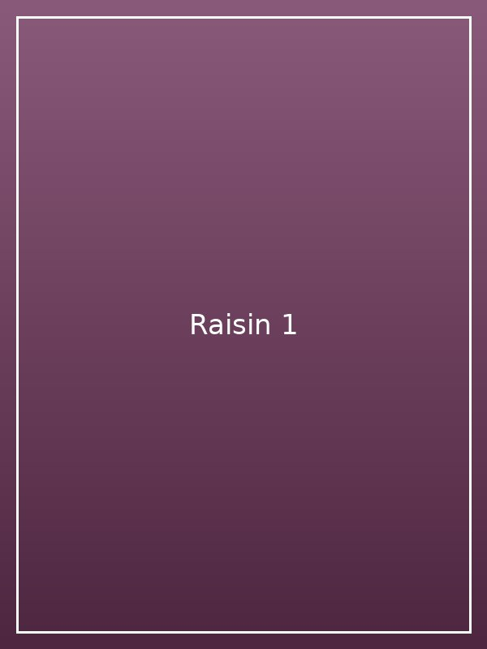
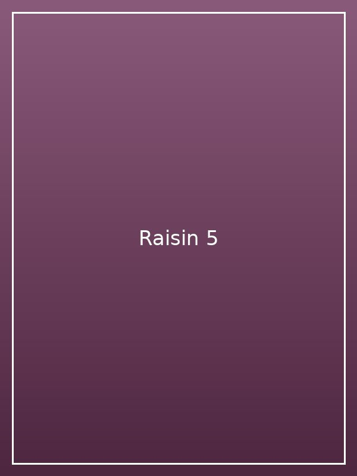
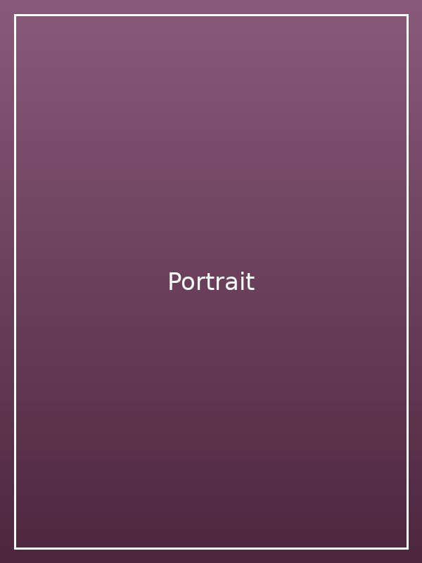
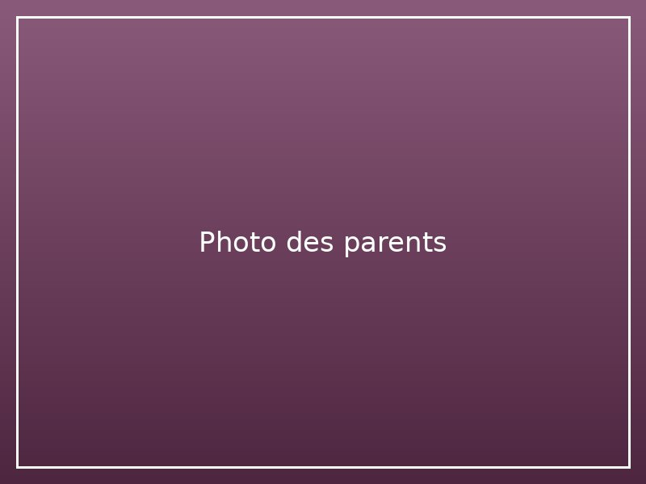

Thèse de doctorat
Disponible sur theses.fr (référence 1992NICE4547).
Consulter la thèse →Raisin de table · Meknès, Maroc
La viticulture est ma passion et mon activité parallèle. C'est aussi un héritage culturel et naturel.



Docteur-ingénieur · Enseignant-chercheur · Viticulteur
Né à Meknès, à Aïn Orma. Ingénieur, docteur-ingénieur, professeur de mathématiques appliquées, et passionné de viticulture.
Ma devise « C'est en forgeant que l'on devient forgeron. »
Les sciences sont ma première religion.
Naissance à Aïn Orma, commune de Meknès.
Spécialité : mécanique des fluides et stabilité des systèmes dynamiques. Diplômé de l'Université de Nice Sophia Antipolis.
Professeur de mathématiques appliquées à l'Université de Nice Sophia Antipolis.
Ma thèse et quelques références de mes travaux en mécanique des fluides numérique.
Disponible sur theses.fr (référence 1992NICE4547).
Consulter la thèse →Ouvrage de référence, extraits sur Google Livres.
Voir sur Google Livres →Actes et contributions, extraits sur Google Livres.
Voir sur Google Livres →
Marié en 1994 à la mairie de Nice avec ma belle et douce Myriam, rencontrée à Nice en 1989. Nous avons eu nos trois filles :
Je suis fier de ma petite famille.
En souvenir de mon père Mofid Hadj Haddou et de ma mère Zohra Bent Hamou, décédés en 2005 et 2007. Que Dieu bénisse leurs âmes.